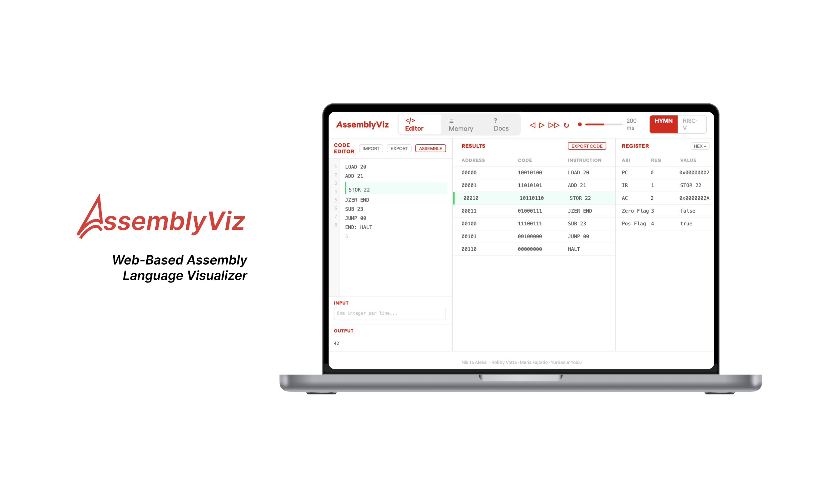
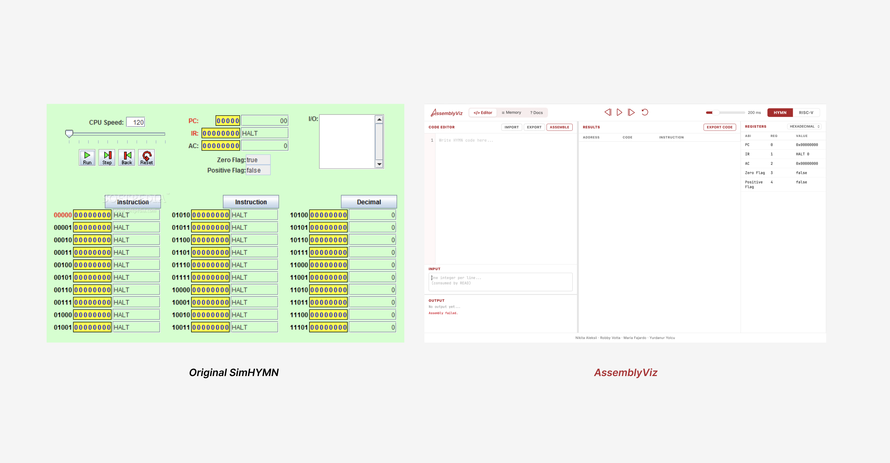
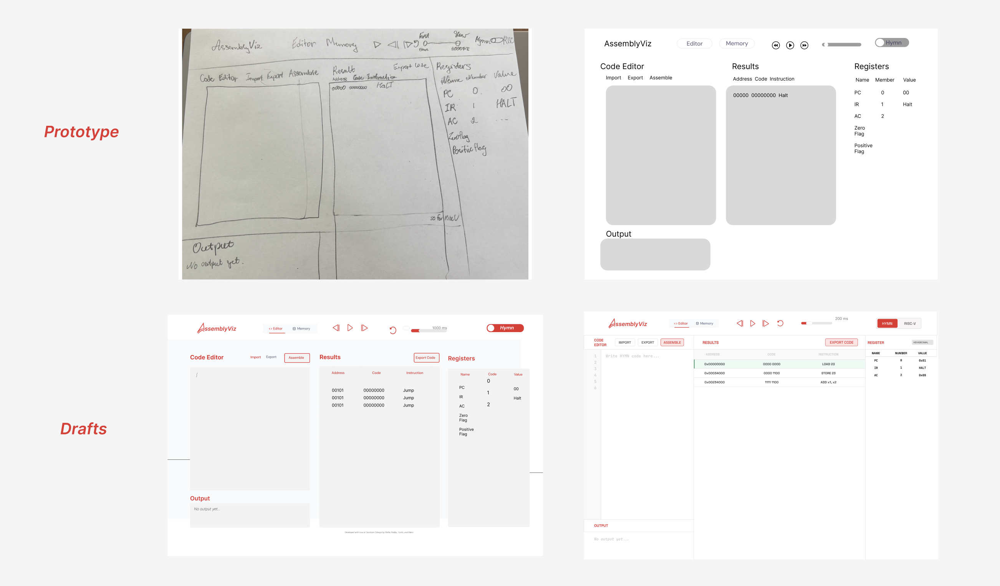
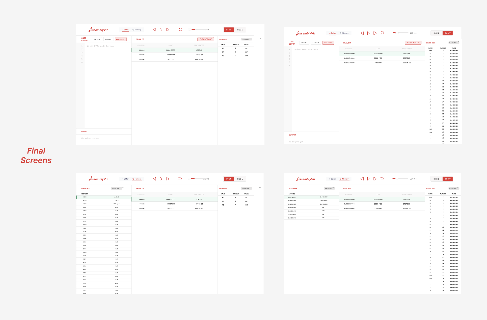
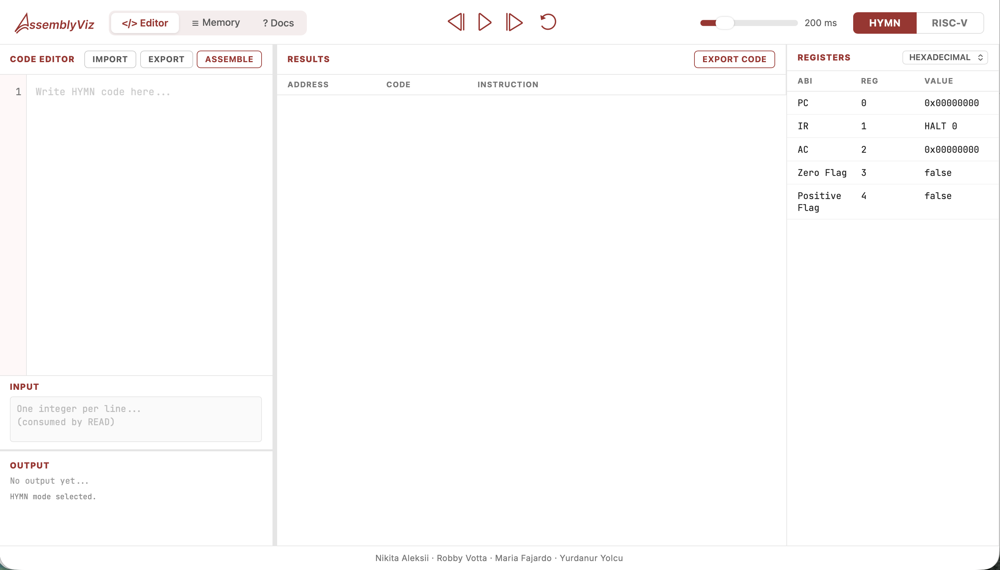
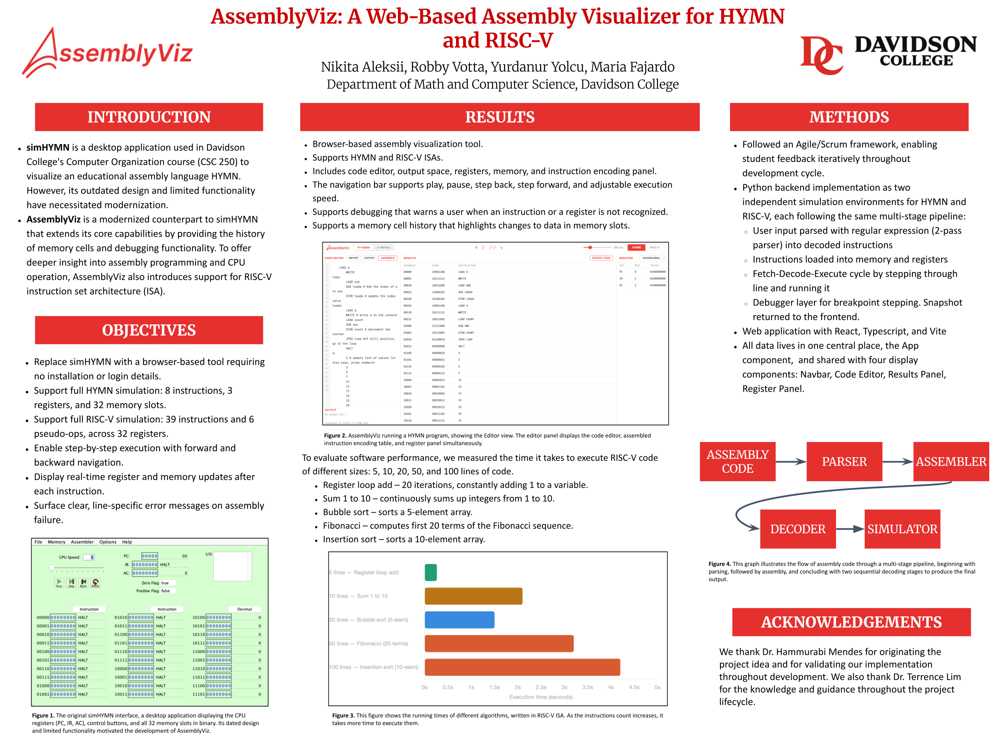

Case Study · Frontend Development · UX Design · Spring 2026
A browser-based assembly language visualizer that replaces Davidson College's outdated SimHYMN desktop tool, giving Computer Organization students a modern, interactive way to step through HYMN and RISC-V code and watch registers and memory update in real time.

AssemblyViz is a full-stack web application built for Davidson College's Computer Organization course (CSC 250). The project was commissioned by Dr. Hammurabi Mendes, who wanted a more accessible, visually engaging replacement for SimHYMN — the desktop simulator his students had been struggling with for years. The application supports two instruction set architectures: HYMN, a minimal 8-bit educational CPU, and RISC-V (RV32I), a real-world 32-bit architecture used in modern hardware. Students can write assembly code, assemble it with one click, and step through execution one instruction at a time, watching the CPU state evolve in real time.
As Product Owner, I was responsible for translating Dr. Mendes's vision into concrete user requirements, prioritizing the backlog across three Agile sprints, and ensuring the team stayed aligned on what we were building and why. As a developer, I led the frontend — designing and building the React and TypeScript interface from scratch, and integrating it with the Python FastAPI backend through a REST API.
SimHYMN, the existing tool, had three core problems. First, it was a desktop application that required installation — Mac users in particular reported repeated permission errors that blocked them from running it at all. Second, its interface was visually outdated and confusing, creating what Dr. Mendes described as a psychological barrier for students new to assembly programming. Third, it lacked modern debugging features: there was no memory history, no step-back navigation, and no clear error messages when code failed to parse.
To validate these pain points, we interviewed past CSC 250 students before designing anything. The interviews confirmed that most students found SimHYMN hard to read, hard to install, and hard to debug with. These findings directly shaped our three design priorities: browser-based (no installation), visually clear (clean three-panel layout), and debuggable (step forward, step back, memory change highlighting, line-specific errors).

We followed an Agile Scrum framework across three sprints. Sprint 1 focused on architecture and design — we finalized the UI in Figma and validated it with Dr. Mendes before writing any functional code. Sprint 2 was our heaviest implementation sprint, building and testing both the HYMN and RISC-V backends in Python. Sprint 3 was where I took the lead: migrating the prototype frontend from plain HTML and JavaScript into a full React and TypeScript application, then connecting it to the backend via a REST API.
fetch() with async/await, handling both HYMN and RISC-V simulation flows

The final product is a browser-based simulator that requires no installation. The three-panel layout — code editor on the left, assembled instructions in the center, registers on the right — was designed to match the mental model students already have of how a CPU works. The memory panel is accessible via a tab toggle to keep the default view uncluttered.
Key frontend features I built and own:
App.tsx and flows down to panels as props, so all four panels always stay in sync after every stepisChanged flagsetTimeout loop that waits for each API response before scheduling the next step, preventing race conditionsonMouseDown drag handlers and useState for panel width, no external library needed
AssemblyViz was presented at Davidson College's Research Symposium in Spring 2026. The simulator successfully replicates the full HYMN instruction set (validated against SimHYMN using four test programs: a sum calculator, a multiplier, a prime number printer, and a self-modifying virus program) and the full RV32I RISC-V base integer instruction set (validated using a merge sort implementation). Dr. Mendes expressed satisfaction with the interface and functionality throughout development and indicated intent to use the tool in future CSC 250 semesters.
Performance benchmarking of the RISC-V simulator showed expected O(N) scaling with program length due to the replay-from-scratch execution strategy — a known tradeoff we documented and presented as part of the research poster.

We fully documented the project in out Github repository, including a README with setup instructions, a design document with Figma mockups, and a research poster summarizing the project for the Davidson College Research Symposium.
This project pushed me to grow in two directions at once — as a developer
and as a product owner. On the development side, I learned React and TypeScript
in the context of a real production codebase, not a tutorial. Decisions like
lifting state to App.tsx, using useRef instead of
useState for the play loop, and threading explicit state through
StepParams instead of reading from React state directly — these
weren't patterns I learned from a course, they were solutions I had to figure
out when things broke.
On the product side, owning the backlog taught me that good prioritization
is about protecting the team as much as it is about deciding what to build.
The decision to focus on a working backend before touching the frontend — even
though it delayed the UI — was one I advocated for and I think it made the
final integration much cleaner. If I were to do it again, I'd push for the
.gitignore and branch discipline to be set up from day one.
AssemblyViz also confirmed for me that I want to work at the intersection of engineering and design — not just as a handoff point between the two, but as someone who can own both ends and make decisions that account for the full picture.